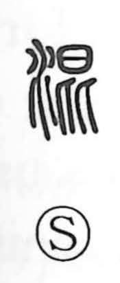

混

Uncategorized
Kun: majiru, mazaru, mazeru, komu | On: kon
to mix ・ to blend ・ to mingle ・ confusion ・ chaos
Explanation
混 is a phono-semantic compound: the water element on the left places it in the realm of fluidity and mingling, while the phonetic 昆 on the right originally pictured a small insect, with 比 suggesting its legs. Because tiny insects tend to assemble in swarms—everything intermingled—this image gives the character the sense of “to mix.” From there it extends to ideas like “lumping together” (混一) and “confusing” or “mixing up” (混同). In 混沌 it evokes the indistinct, undivided state before heaven and earth were separated, resonating with Laozi, chapter 25: “There is a thing confusedly formed, born before Heaven and Earth,” a vision of the cosmos at its inception.